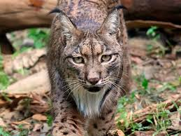
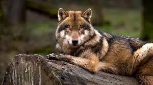
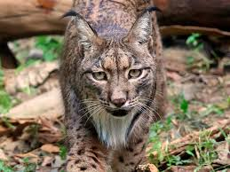
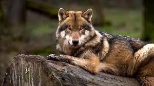

The pets Wilds
 In Mongolia, they are part of a deep cultural tradition of hunting with eagles and a symbol of honor, freedom, and loyalty.

For the ancestral Hopewell culture, it was a tradition to keep lynxes as pets.

The cultures that domesticated wolves were the nomadic hunter-gatherer peoples of Eurasia and North America.
In Mongolia, they are part of a deep cultural tradition of hunting with eagles and a symbol of honor, freedom, and loyalty.

For the ancestral Hopewell culture, it was a tradition to keep lynxes as pets.

The cultures that domesticated wolves were the nomadic hunter-gatherer peoples of Eurasia and North America.
 The cultures that domesticated horses were primarily those of the Eurasian steppes, such as the ancient peoples of southern Russia and Ukraine, and the Bronze Age Sintashta culture.
The cultures that domesticated horses were primarily those of the Eurasian steppes, such as the ancient peoples of southern Russia and Ukraine, and the Bronze Age Sintashta culture.